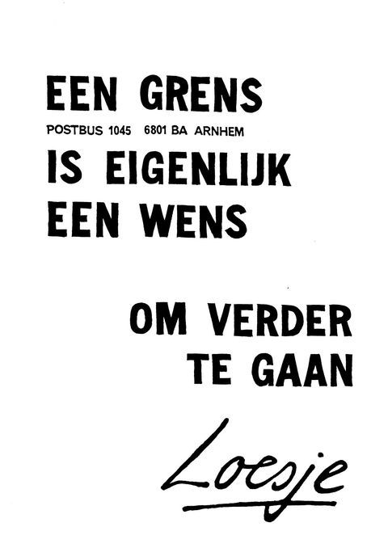

Wordt ik mishandeld of misbruikt?
Er zijn verschillende vormen van kindermishandeling. Bij alle vormen van mishandeling varieert de ernst van licht tot zeer ernstig/fataal. De verschillende vormen van kindermishandeling zijn:
- Lichamelijke mishandeling: Lichamelijk geweld tegenover een kind. Denk hierbij aan slaan, schoppen, bijten, knijpen, toebrengen van brandwonden etc.
- Lichamelijke verwaarlozing: Hierbij wordt er een langere tijd niet voldaan aan de lichamelijke basisbehoeften van het een kind.
- Psychische mishandeling: Een kind wordt door zijn ouders/opvoeders afgewezen en/of vijandig behandelt.
- Psychische verwaarlozing: Een kind krijgt te weinig positieve aandacht en de basale behoeften van een kind worden structureel genegeerd. Denk hierbij aan liefde, warmte, steun en geborgenheid.
- Seksueel misbruik: Een kind wordt op seksuele wijze aangeraakt en seksuele handelingen worden opgedrongen.
- Getuige van huiselijk geweld: Een kind wordt geconfronteerd met geweld binnen het gezin. Hierbij is hij getuige van de gevolgen en verwondingen (Nederlands Jeugdinstituut, 2016).

Welke gevolgen zijn er?
Als je enige vorm van kindermishandeling of misbruik hebt ervaren heb je op latere leeftijd kans op gevolgen. Misbruik kan grote invloed hebben op je dagelijkse leven. Naast lichamelijke klachten kan je last hebben van angst, boosheid, schuldgevoelens en schaamte. Ook kan je last hebben van weinig slaap en een slechte concentratie. De verschillende gevolgen van kindermishandeling zijn:
- Een verhoogde kans op roken
- Een verhoogde kans op overmatig alcohol gebruik
- Psychologische klachten
- Een hoger gewicht met soms zelfs overgewicht
- Lager gewicht met soms zelfs ondergewicht
Aangifte
Natuurlijk is het ook mogelijk om aangifte te doen nadat je seksueel misbruikt bent, dit kan om verschillende vormen van seksueel misbruik gaan. Wij begrijpen dat dit een moeilijke stap is en dat er gevoelens van angst of schaamte kunnen zijn. Toch is het belangrijk dat je je bedenkt dat mishandeling of misbruik strafbaar is. De dader kan alleen gestraft worden als je aangifte doet. Ook kan jij hierdoor ervoor zorgen dat de dader niet meer bij een ander kan doen.
Wanneer je aangifte wil doen kan dit bij de regiopolitie, hier maak je eerste een melding van wat er gebeurd is. Een melding wordt dan meestal gevolg door een informatief gesprek, hier kan je duidelijker vertellen wat er gebeurd is en kan de politie je uitleggen wat de mogelijkheden zijn. Na dit gesprek kan je zelf gaan overwegen of je wel of geen aangifte wil doen, maar daarover hoor je meer van de politie bij het gesprek. Je kan jaren na het seksuele misbruik nog aangifte doen maar het is wel het best om dit zo snel mogelijk te doen, dan zijn eventuele sporen nog het beste aanwezig.
Voor aangifte bij de politie kan je bellen naar 0900-8844. Wil je hier hulp bij of met iemand overleggen? In dit geval kan je contact opnemen met Slachtofferhulp Nederland en bel je naar 0900-0101. In het specifieke geval van huiselijk geweld kan je bellen met Veilig Thuis, 0800-2000. Dit telefoon gesprek kan gehaal anoniem plaatsvinden.